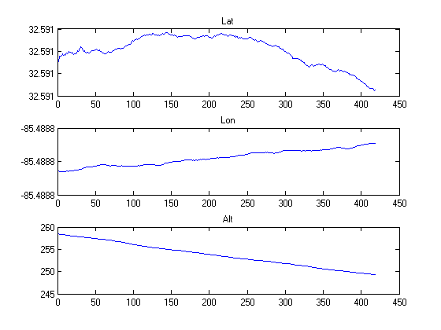
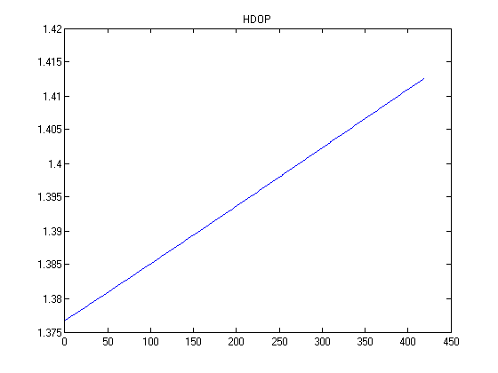
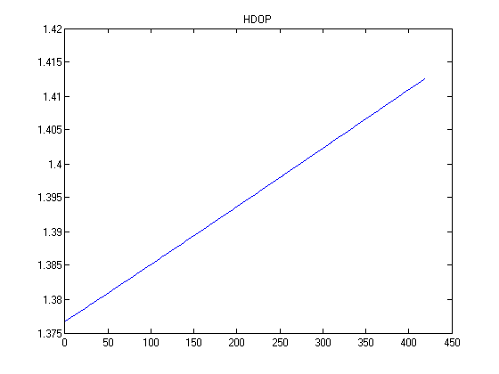

Contents
Data Cleaning/Processing
This whole cell is stolen from Rob's code for part 1b.
clear all; clc; close all; c = 299792458; transit_time_est = 20e6/c; fprintf('\nPart 1 - a)\n') load(['..' filesep 'data' filesep 'Novatel_Data_ephemfixed.mat']) clear time gNovatel1 psrL1 = gNovatel0.zPsrL1_gNovatel0; adrL1 = gNovatel0.zAdrL1_gNovatel0; adrL2 = gNovatel0.zAdrL2_gNovatel0; ndat = length(psrL1); % number of measurement epochs valid_dat = []; % Find the GPS milliseconds into GPS week for which we have raw measurements time = zeros(1,length(psrL1)); for i = 1:ndat if isempty(psrL1{i}) || isempty(adrL2{i}) || isempty(adrL2{i}) continue end time(i) = psrL1{i}(34); valid_dat(end+1) = i; %!! assume that all ADR and PSR came in at the same time end % fixing measurements - remove invalid data epochs time = time(valid_dat); psrL1_ = psrL1(valid_dat); adrL1_ = adrL1(valid_dat); adrL2_ = adrL2(valid_dat); ndat = length(time); % SV's for which ephemeris data exists prns = [1 2 4 8 9 10 12 17 20 24 28 32]; nsv = length(prns); % ephem_mat: each column corresponds to an sv ephem_mat_novatel = [... gNovatel0.zEphem1_gNovatel0{end},... gNovatel0.zEphem2_gNovatel0{end},... gNovatel0.zEphem4_gNovatel0{end},... gNovatel0.zEphem8_gNovatel0{end},... gNovatel0.zEphem9_gNovatel0{end},... gNovatel0.zEphem10_gNovatel0{end},... gNovatel0.zEphem12_gNovatel0{end},... gNovatel0.zEphem17_gNovatel0{end},... gNovatel0.zEphem20_gNovatel0{end},... gNovatel0.zEphem24_gNovatel0{end},... gNovatel0.zEphem28_gNovatel0{end},... gNovatel0.zEphem32_gNovatel0{end}... ]; % Turn PSR/ADR data into a matrix psrL1 = zeros(nsv,ndat); adrL1 = zeros(nsv,ndat); adrL2 = zeros(nsv,ndat); for k = 1:ndat psrL1(:,k) = psrL1_{k}(prns+1); adrL1(:,k) = adrL1_{k}(prns+1); adrL2(:,k) = adrL2_{k}(prns+1); end % if there's no data, remove the sv have_dat = find(any(psrL1,2)); prns = prns(have_dat); nsv = length(prns); psrL1 = psrL1(have_dat,:); adrL1 = adrL1(have_dat,:); adrL2 = adrL2(have_dat,:); ephem_mat_novatel = ephem_mat_novatel(:,have_dat); % put time into seconds from milliseconds time = time/1000; ephem_mat = zeros(21,nsv); ephem_time = zeros(1,nsv); % gps seconds into week at which ephem was transmitted sv_clkcorr = zeros(nsv,ndat); sv_clkcorr_psr = zeros(size(sv_clkcorr)); % range correction corresponding to clock correction svpos = zeros(3,nsv,ndat); psrL1corr = zeros(size(psrL1)); for i = 1:nsv % get the ephemeris matrix into the correct format [ephem_mat(:,i), ephem_time(i)] = ephem_novatel2gavlab(ephem_mat_novatel(:,i)); % Find the SV Position at each of the measurement epochs we have ephem_mat_ = ephem_mat(:,i); for k = 1:ndat tx_time = time(k);%-transit_time_est; [svpos(:,i,k), sv_clkcorr(i,k)] = calc_sv_pos(ephem_mat_, tx_time, transit_time_est); sv_clkcorr_psr(i,k) = sv_clkcorr(i,k)*c; psrL1corr(i,k) = psrL1(i,k) + sv_clkcorr_psr(i,k); end end
Part 1 - a)
Psuedorange/Position Estimation
latplot=[]; lonplot=[]; altplot=[]; truelatplot=[]; truelonplot=[]; truealtplot=[]; HDOP=[]; for j=200:ndat %:ndat guess=[0,0,0,0]; guess_update=1; while max(abs(guess_update))>0.5 G=ones(nsv,4); drho=ones(nsv,1); for k=1:nsv if psrL1corr(k,j)==0 G(k,:)=[nan,nan,nan,nan]; drho(k)=nan; else xs=svpos(1,k,j); ys=svpos(2,k,j); zs=svpos(3,k,j); svp=[xs,ys,zs]; G(k,1:3)=-(svp-guess(1:3))./psrL1corr(k,j); G(k,4)=c; drho(k)=psrL1corr(k,j)-(sqrt(sum((guess(1:3)-svp).^2))); end end for k=1:nsv if isnan(G(k,1)) G(k,:)=[]; drho(k)=[]; end end guess_update=pinv(G)*drho; guess=guess+guess_update'; % fprintf('%25.15f\n',max(abs(guess_update))) end DOP=calcDOP(G); HDOP(end+1)=DOP(1); [lat,lon,alt]=wgsxyz2lla(guess(1:3)); latplot(end+1)=lat; lonplot(end+1)=lon; altplot(end+1)=alt; [lat,lon,alt]=wgsxyz2lla([gNovatel0.zX_gNovatel0(j),gNovatel0.zY_gNovatel0(j),gNovatel0.zZ_gNovatel0(j)]); truelatplot(end+1)=lat; truelonplot(end+1)=lon; truealtplot(end+1)=alt; %fprintf('%20.10f\t%20.10f\t%20.10f\n',lat,lon,alt) end figure; subplot(3,1,1) plot(latplot) title('Lat') subplot(3,1,2) plot(lonplot) title('Lon') subplot(3,1,3) plot(altplot) title('Alt') figure; subplot(3,1,1) plot(latplot-truelatplot) title('LatCal-LatNovatel') subplot(3,1,2) plot(lonplot-truelonplot) title('LonCal-LonNovatel') subplot(3,1,3) plot(altplot-truealtplot) title('AltCal-AltNovatel') figure; plot(HDOP) title('HDOP') clc; fprintf('\nMean Position: \n\tLat: %20.10f degrees\n\tLon: %20.10f degrees\n\tAlt: %20.10f meters\n\n',mean(lat),mean(lon),mean(alt)); fprintf('\nExpected Error: \n\tHDOP: %20.10f meters\n',mean(HDOP));
Mean Position: Lat: 32.5908622962 degrees Lon: -85.4891910600 degrees Alt: 172.3236703399 meters Expected Error: HDOP: 1.3945468037 meters
 
